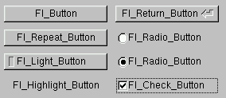
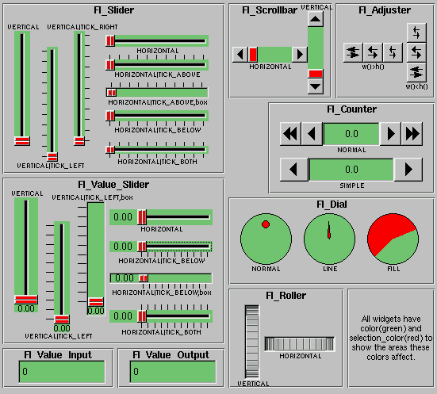
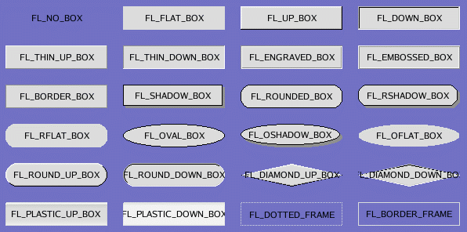

Callbacks are functions that are called when the value of a widget
changes. A callback function is sent a Fl_Widget pointer of
the widget that changed and optionally a pointer to data of some sort:
void xyz_callback(Fl_Widget *w, void *data) {
...
}
The callback() method sets the callback function for a
widget. You can optionally pass a pointer to some data needed for the
callback:
int xyz_data;
button->callback(xyz_callback, data);
Normally callbacks are performed only when the value of the widget
changes. You can change this using the when() method:
button->when(FL_WHEN_NEVER);
button->when(FL_WHEN_CHANGED);
button->when(FL_WHEN_RELEASE);
button->when(FL_WHEN_RELEASE_ALWAYS);
button->when(FL_WHEN_ENTER_KEY);
button->when(FL_WHEN_ENTER_KEY_ALWAYS);
button->when(FL_WHEN_CHANGED | FL_WHEN_NOT_CHANGED);
FLTK provides many types of buttons:
- Fl_Button - A standard button.
- Fl_Check_Button - A toggle button with a check box.
- Fl_Light_Button - A push button with a light.
- Fl_Repeat_Button - A push button that repeats it's callback when held.
- Fl_Return_Button - A push button that is activated by the
Enter key.
- Fl_Radio_Button - A button with a circular mark.

For all of these buttons you just need to include the corresponding
<fltk/Fl_xyz_Button.h> header file. The constructor takes the
bounding box of the button and optionally a label string:
Fl_Button *button = new Fl_Button(x, y, width, height, "label");
Fl_Light_Button *lbutton = new Fl_Light_Button(x, y, width, height);
Fl_Round_Button *rbutton = new Fl_Round_Button(x, y, width, height, "label");
Each button has an associated type() which allows it to behave
as a push button, toggle button, or radio button. This type is
defaulted for each button type but you can change it.
button->type(0); // default for all other buttons
button->type(FL_TOGGLE_BUTTON); // default for Fl_Check_Button & Fl_Light_Button
button->type(FL_RADIO_BUTTON); // default for Fl_Radio_Button
The value() method
returns the current button state (0 = off, 1 = on) (push buttons are
on while they are held down). The set() and clear() methods can be used on
toggle buttons to turn a toggle button on or off, respectively. Radio
buttons can be turned on with the setonly() method; this will also
turn off other radio buttons in the same group.
FLTK provides several text widgets for displaying and receiving text:
- Fl_Input - A standard one-line text input field.
- Fl_Output - A standard one-line text output field.
- Fl_Multiline_Input - A standard multi-line text input
field.
- Fl_Multiline_Output - A standard multi-line text output
field.
The Fl_Output and Fl_Multiline_Output widgets allow
the user to copy text from the output field but not change it.
The value() method
is used to get or set the string that is displayed:
Fl_Input *input = new Fl_Input(x, y, width, height, "label");
input->value("Now is the time for all good men...");
The string is copied to the widget's own storage when you set the
value() of the widget.
Unlike text widgets, valuators keep track of numbers instead of
strings. FLTK provides the following valuators:
- Fl_Value_Input - A text field for a number and up/down
arrow buttons (MicroSoft calls this a "spin box")
- Fl_Slider - A scrollbar with a knob.
- Fl_Value_Slider - A slider that shows the current value.
- Fl_Dial - A round knob.
- Fl_Roller - An SGI-like dolly widget.
- Fl_Scrollbar - A standard scrollbar widget.

The value()
method gets and sets the current value of the widget. The
minimum() and
maximum() methods set the range of values that are reported by
the widget.
The Fl_Group widget class is used as a general purpose
"container" widget. Besides grouping radio buttons, the groups are
used to encapsulate windows, tabs, and scrolled windows. The following
group classes are available with FLTK:
- Fl_Double_Window - A double-buffered window on the screen.
- Fl_Gl_Window - An OpenGL window on the screen.
- Fl_Group - The base container class; can be used to group
any widgets together.
- Fl_Scroll - A scrolled window area.
- Fl_Tabs - Displays child widgets as tabs.
- Fl_Window - A window on the screen.
The size and position of widgets is usually set when you create them.
You can access them with the x(), y(), w(),
and h() methods.
You can change the size and position by using the position(),
resize(), and size() methods:
button->position(x, y);
group->resize(x, y, width, height);
window->size(width, height);
If you change a widget's size or position after it is displayed you
will have to call redraw() on the widget's parent.
The typedef Fl_Color is a 32-bit number that
is used to store a color. For most widgets only the "indexed" colors
are used, these are colors with a value less than 256 that is an index
into a color palette of 256 colors. This is not the X or WIN32
colormap, but instead is an internal table with fixed contents.
There are symbols for naming some of the more common colors:
- FL_BLACK
- FL_RED
- FL_GREEN
- FL_YELLOW
- FL_BLUE
- FL_MAGENTA
- FL_CYAN
- FL_WHITE
- FL_GRAY (this is the default background color of most widgets)
You can also get an arbitrary color with fl_rgb(r,g,b). However this does not
work that well on 8-bit screens.
The widget color can be set using the color() method:
button->color(FL_RED);
button->color(fl_rgb(128,200,210));
Similarly, the label color can be set using the labelcolor()
method:
button->labelcolor(FL_WHITE);
Fl_Widget::box()
is a pointer to a struct Fl_Boxtype_. This
describes how to draw the box around the widget. By making your own
you can cause arbitrary drawing code to be called.
There are macros that are pointers to the built-in box types:

FL_NO_BOX means nothing is drawn at all, so whatever is
already on the screen remains. The FL_..._FRAME types only
draw their edges, leaving the interior unchanged. In the above diagram
the blue color is the area that is not drawn by the box.
The label(), image(), align(),
labelfont(), labelsize(), and labeltype()
methods control the labeling of widgets.
label()
The label() method sets the string that is displayed for the
label. For the FL_SYMBOL_LABEL and image label types the
string contains the actual symbol or image data.
image()
The image() method sets an image that is drawn with the
label. The value is a pointer to a class Fl_Image. This class stores the data of the
image and also stores a window-system cached copy that is created when
the image is first drawn so that redrawing it is very fast.
Different subclasses draw different types of images. The provided
types include
Fl_Bitmap,
Fl_Pixmap,
Fl_RGB_Image.
align()
The align() method positions the label. The following
constants are defined (they may be OR'd together as needed):
- FL_ALIGN_CENTER - center the label in the widget.
- FL_ALIGN_TOP - align the label at the top of the widget.
- FL_ALIGN_BOTTOM - align the label at the bottom of the
widget.
- FL_ALIGN_LEFT - align the label to the left of the widget.
- FL_ALIGN_RIGHT - align the label to the right of the
widget.
- FL_ALIGN_INSIDE - align the label inside the widget.
- FL_ALIGN_CLIP - clip the label to the widget's bounding
box.
- FL_ALIGN_WRAP - wrap the label text as needed.
If there is an image, it is aligned first. Then the text label is
aligned in the same way in the space that remains beside the image.
If you need more complex layout you can try making your own image or
labeltype objects.
label_type()
The label_type() method sets how to draw the text label. It
does not affect the image. The following standard label types are
included:
- FL_NORMAL_LABEL - draws the text.
- FL_NO_LABEL - does nothing
- FL_SYMBOL_LABEL - draws "@xyz" labels, see "
Symbol Labels"
- FL_SHADOW_LABEL - draws a drop shadow under the text
- FL_ENGRAVED_LABEL - draws edges as though the text is
engraved
- FL_EMBOSSED_LABEL - draws edges as thought the text is
raised
Fl_Widget::label_type()
is a pointer to a struct Fl_Labeltype_.
By making your own you can cause arbitrary drawing code to be called.
The FL_SYMBOL_LABEL label type uses the label()
string to look up a small drawing procedure in a hash table. For
historical reasons the string always starts with '@'; if it starts with
something else (or the symbol is not found) the label is drawn
normally:
 The @ sign may be followed by the following optional "formatting"
characters, in this order:
The @ sign may be followed by the following optional "formatting"
characters, in this order:
- '#' forces square scaling, rather than distortion to the widget's
shape.
- +[1-9] or -[1-9] tweaks the scaling a little bigger or smaller.
- [1-9] - rotates by a multiple of 45 degrees. '6' does nothing,
the others point in the direction of that key on a numeric keypad.
Shortcuts are key sequences that activate widgets (usually buttons or
menu items). The shortcut() method sets the shortcut for a
widget:
button->shortcut(FL_Enter);
button->shortcut(FL_SHIFT + 'b');
button->shortcut(FL_CTRL + 'b');
button->shortcut(FL_ALT + 'b');
button->shortcut(FL_CTRL + FL_ALT + 'b');
button->shortcut(0); // no shortcut
The shortcut value is the key event value (the ASCII value or one of
the special keys like FL_Enter) combined
with any modifiers (like shift, alt, and control).